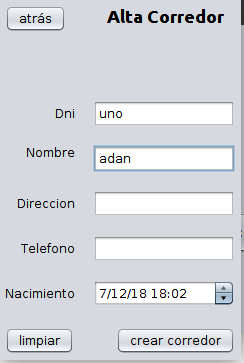
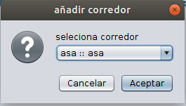

cierra esta pantalla.
tabla con la informacion de los participantes, si abres una carrera finalizada además, aparece la posición de cada uno de los participantes
elimina al participante seleccionado de la carrera, si la carrera está finalizada viene desactivado
abre un formulario de creacion de corredor
se habre una pantalla de seleccion de corredores, despues debes de añadirle un dorsal, si la carrera está finalizada viene desactivado.
"nombre del corredor"::"direccion"